The MoSync IDE is based on Eclipse. We've made several modification to Eclipse to make it a great tool for cross-platform mobile application development, plus of course added some unique MoSync features! In this guide we will take you on a whirlwind tool of the IDE, and give you pointers to more detailed descriptions of each feature.
The IDE lets you edit both HTML5/JavaScript (great for defining user interfaces) and C/C++ (ideal for any heavy lifting your app needs to do).
Before you start this tour, quickly create a hybrid HTML5/C++ application following our Getting Started with HTML5 and JavaScript tutorial. Once you have done that...
1. Edit the code! The index.html file is a standard web page with <head> and <body> tags. Paste in your existing HTML and JavaScript, or create new pages as necessary. Add JavaScript libraries like the MoSync Wormhole JavaScript Library, jQuery and jQTouch. Set styles in styles.css, or add stylesheets as needed. Put your app's resource files (images, videos, audio and font files) in the Local Files folder. Read our tutorial Developing HTML5 and JavaScript Apps. Explore our HTML5/JavaScript API Reference.
The MoSync IDE features JavaScript Proposals and C++ Template Proposals to help you when you code. Just press CTRL+SPACEBAR:
2. Check your project's build settings (right-click on project > Properties > MoSync Project > Build Settings). Here you can modify build strategies, see the libraries currently included, set compiler flags, and so on:
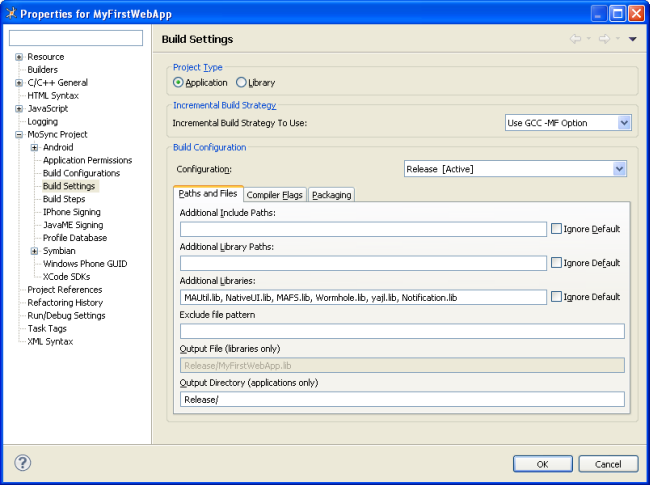
See Build Configurations and Settings for more information.
3. Set your project's active profile (the one that the MoSync SDK builds for when you click the Run button) by clicking the Set Active Profile button:
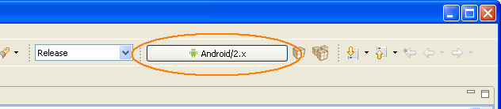
Choose desired capabilities by clicking the Select Capabilities button in the Active Profile dialog. If you chose the HTML5/JS WebUI Project template for your project, for example, the "Must have" capability box for HTML5 is ticked, limiting the platforms available for your project:
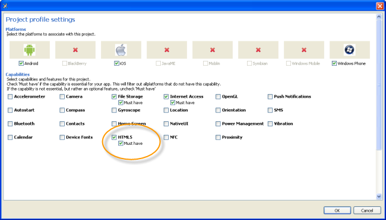
See Platform and Device Profiles for more information.
4. Upload your app to a device over Bluetooth. See Scanning for a Device and Sending to a Device.
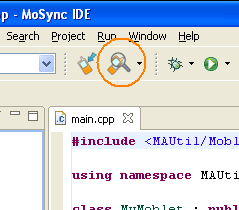
5. Output your final packages for all profiles by clicking the Build for all Profiles icon on the main IDE toolbar. A package will be created for each of your selected profiles:
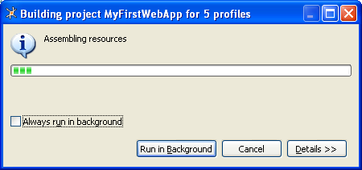
Your application packages will appear in the Release Packages folder in your project:
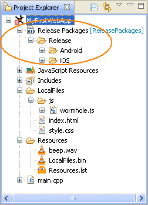
For more information about packaging your application, see Finalizing Applications.
6. Check out the example applications installed with the MoSync Mobile SDK. We've examples for pure HTML5/JavaScript apps, C/C++ apps, and hybrid apps that use both HTML5/JavaScript and C/C++!
| 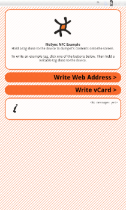 | 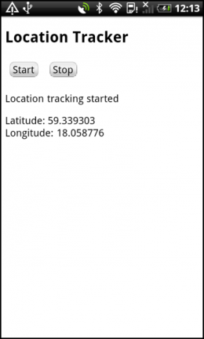 | 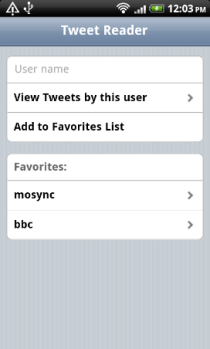 |
You can import all the examples from the MoSync IDE's Welcome screen (Help > Welcome). Or you can import individual examples as your need them — see Importing the Examples.
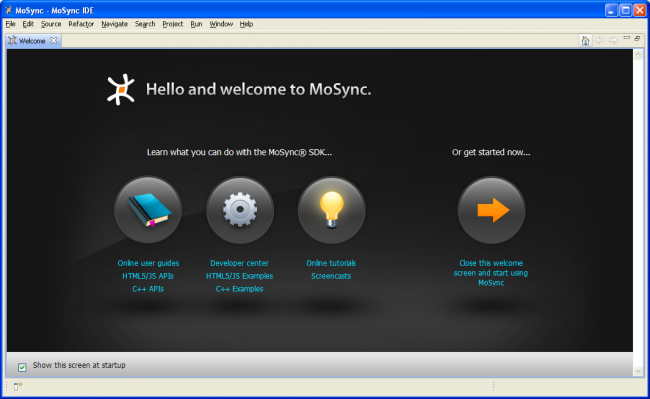
7. Also on the Welcome screen you'll find a link to our Mobile Development Forums. We've an active user community who would love to hear from you, to learn from you, and to help you.
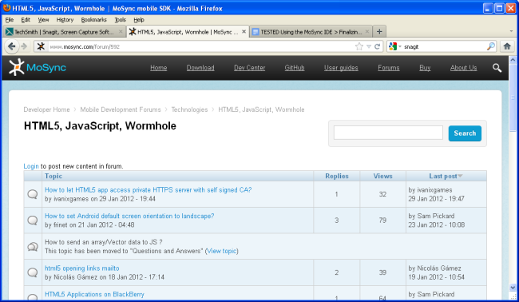
8. Explore the MoSync SDK's other HTML5 templates:
We also have many different templates for C and C++ projects. Check them out too. And when you are ready to dig deeper, explore our extensive documentation library.